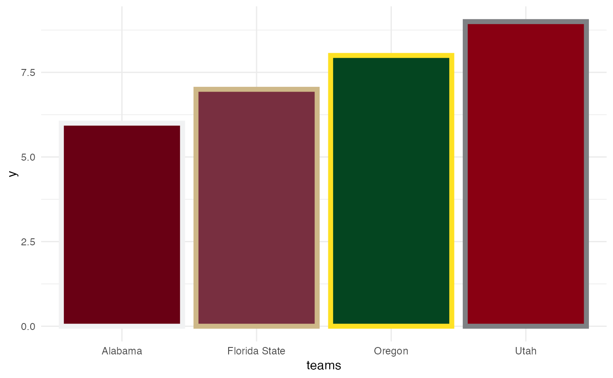

These functions allows you to map college football team names as levels to the color and fill aesthetics
scale_color_cfb( alt_colors = NULL, values = NULL, ..., aesthetics = "colour", breaks = ggplot2::waiver(), na.value = "grey50", guide = NULL, alpha = NA ) scale_colour_cfb( alt_colors = NULL, values = NULL, ..., aesthetics = "colour", breaks = ggplot2::waiver(), na.value = "grey50", guide = NULL, alpha = NA ) scale_fill_cfb( alt_colors = NULL, values = NULL, ..., aesthetics = "fill", breaks = ggplot2::waiver(), na.value = "grey50", guide = NULL, alpha = NA )
| alt_colors | Vector of team names to use the alternate color of. |
|---|---|
| values | If |
| ... | Arguments passed on to scale_color_manual |
| aesthetics | Character string or vector of character strings listing the
name(s) of the aesthetic(s) that this scale works with. This can be useful, for
example, to apply colour settings to the |
| breaks | One of:
|
| na.value | The aesthetic value to use for missing ( |
| guide | A function used to create a guide or its name. If |
| alpha | Factor to modify color transparency via a call to |
library(cfbplotR) library(ggplot2) df <- data.frame( y = 6:9, teams = c("Alabama","Florida State","Oregon","Utah") ) ggplot(df, aes(x = teams, y = y)) + geom_col(aes(color = teams, fill = teams), size = 2) + scale_color_cfb(alt_colors = df$teams) + scale_fill_cfb() + theme_minimal()